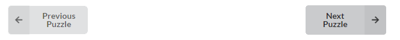
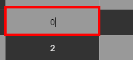
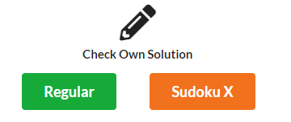
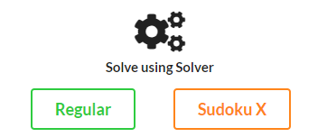
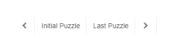

Given an N x N Sudoku board, fill it out using numbers from 1 to N such that each number would appear on its row, column, and subgrid exactly once.
To step up the game, Sudoku X, Y, and XY are modifications that add to the constraints of the puzzle.
Sudoku X invalidates the multiple presence of a number in the a diagonal of the puzzle.
Sudoku Y does the same but in the upper half diagonal and then down the bottom center.
Sudoku XY have both additional constraints.
Apparently, puzzles with even size are immediately considered having no Y and XY solutions.
APPLICATION INSTRUCTIONS
Choose a text file containing the configuration of the puzzles.
After loading it, the puzzles can be navigated using the buttons NEXT puzzle and PREVIOUS puzzle.

Solve the currently displayed puzzle by inputing numbers in the cells.

To check your progress, click CHECK buttons to see whether you have violated a rule or not. Click the same buttons to check your final solution.

SOLVE buttons will show you all possible solutions of the puzzle. Browse all of the solutions by clicking right arrow for NEXT and left arrow for PREVIOUS. A shortcut for INITIAL and LAST PUZZLE was made.


Created by: Parallelipipet
As final project in CMSC 142 2nd Semester AY 17-18
Rendel Cuanico
Melbex De Leon
Bernieson Sahagun
Aizaya Seco